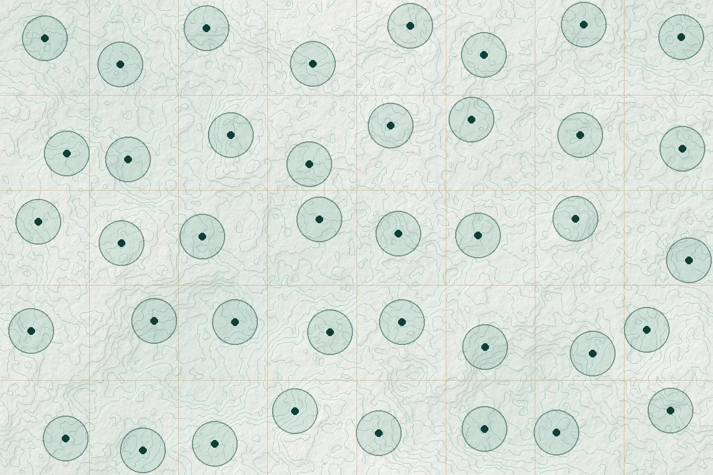
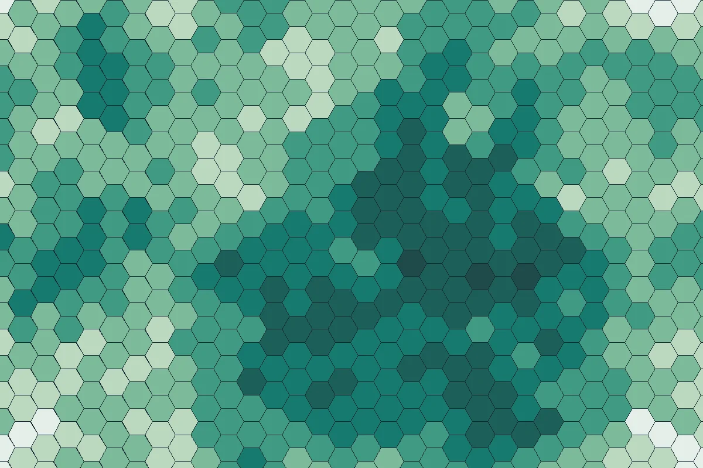

Services
Six practice areas that can be engaged individually or combined into a single, integrated team for complex assignments.
Services can be scoped as stand-alone studies, as technical support to a larger project, or as a component within a joint venture.
About this page. The services below describe what our team is equipped to deliver, based on members' training and professional experience. SPEDAR is a young firm, and not every service listed has yet been delivered as a SPEDAR commission. We are happy to discuss relevant experience for any specific request.
 Illustrative graphic
Illustrative graphicGIS & Remote Sensing
Turning location data into reliable evidence
We analyse satellite imagery and spatial data to show what is where, how it is changing and why it matters. Our GIS team works with optical satellite data, high-resolution imagery, field survey data and administrative maps, and documents methods and accuracy so that results can be trusted and repeated.
What we offer
- GIS mapping and cartographic visualisation
- Satellite imagery analysis
- Land-use and land-cover classification
- Spatial database development
- Environmental and geographic mapping
- Change detection over time
- Geographic data processing and digitisation
- Geospatial decision-support analysis
Typical outputs: Thematic maps and atlases, classified land-cover datasets with accuracy reports, geodatabases, change statistics and technical notes.
Discuss a GIS assignment Illustrative graphic
Illustrative graphicEnvironmental & Climate Consulting
Understanding environmental conditions and climate risk
We collect and interpret environmental information to support project planning, adaptation and resource management. Our role is research and technical support: we prepare baseline information and analysis that feeds into assessments led or approved by the responsible authorities.
What we offer
- Environmental baseline research
- Environmental impact assessment support
- Climate vulnerability assessment
- Climate adaptation planning support
- Environmental monitoring and data interpretation
- Natural resource assessment
- Ecosystem and biodiversity research
Typical outputs: Baseline reports, vulnerability maps and indices, monitoring summaries and input chapters for assessment reports.
Discuss an environmental study Illustrative graphic
Illustrative graphicUrban & Regional Planning
Evidence for land use, settlements and infrastructure
Several of our team members are trained urban and regional planners. We combine spatial analysis, field surveys and policy review to inform land-use decisions, settlement planning and infrastructure priorities at local and regional scale.
What we offer
- Urban and regional development research
- Land-use planning studies
- Spatial development analysis
- Urban infrastructure assessment
- Sustainable settlement planning
- Transport and mobility research
- Planning documentation and technical reporting
Typical outputs: Existing-condition reports, land-use and suitability maps, accessibility analyses, survey findings and planning recommendations.
Discuss a planning study
Illustrative graphicResearch & Development
Applied research designed for decisions
We design and carry out research that answers specific questions for clients, from literature reviews to household surveys and mixed-methods studies. Our researchers have experience in questionnaire design, digital data collection, focus group discussions, key informant interviews and statistical analysis.
What we offer
- Applied research
- Research methodology development
- Literature review and evidence synthesis
- Quantitative and qualitative research
- Field survey design and supervision
- Socioeconomic assessment
- Data analysis and visualisation
- Research documentation and reporting
Typical outputs: Inception reports and methodologies, survey instruments, cleaned datasets, analytical reports and policy briefs.
Discuss a research project
Illustrative graphicData Analytics & Digital Solutions
Data, dashboards and digital tools
Our web and software specialists build the tools that make data usable, from analysis scripts and dashboards to interactive maps and business websites. We favour maintainable, well-documented solutions that clients can run without ongoing dependence on us.
What we offer
- Data cleaning and analysis
- Research dashboards
- Interactive mapping interfaces
- Website development
- Business websites
- Web applications
- GIS-enabled web solutions
- Data visualisation
- Software prototypes
Typical outputs: Dashboards, web maps, websites, web applications, prototypes and technical documentation.
Discuss a digital project Illustrative graphic
Illustrative graphicSustainability & Development Advisory
Research and advice for responsible development
We help development partners, organisations and project teams understand sustainability issues and policy context, and translate research into strategies that are realistic for local conditions.
What we offer
- Sustainability research
- Environmental policy analysis
- Climate resilience strategies
- SDG-related research
- Sustainable resource management
- Development project research and documentation
Typical outputs: Policy reviews, strategy papers, indicator frameworks, project documentation and briefing notes.
Discuss an advisory needNeed a combination of these skills?
Many assignments need GIS, field research and reporting together. Describe what you need and we will propose a team and approach.
Start a conversation